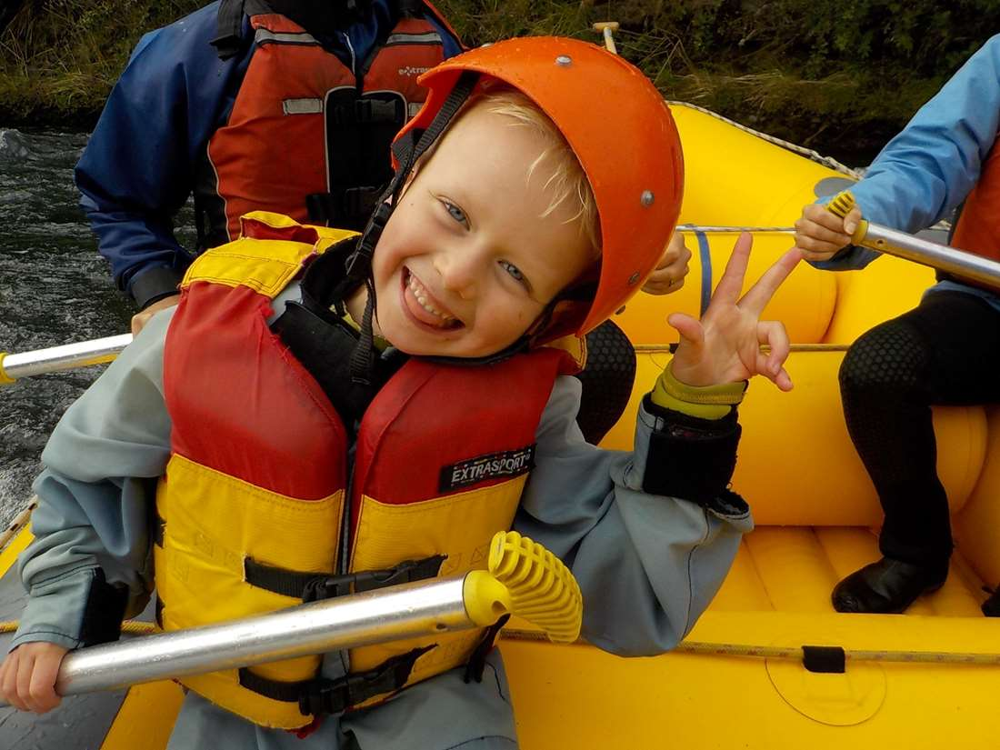

Imagine the rush of cold, frothy water crashing around you as you navigate the twists and turns of a wild river. The roar of the rapids drowns out every other sound, leaving you completely immersed in the moment. Your heart pounds with a mix of fear and exhilaration as you paddle hard to keep the raft steady, working in sync with your team. Each rapid presents a new challenge, demanding quick thinking and precise movements. In those fleeting moments of calm between the white water, you can catch glimpses of stunning scenery, towering cliffs, lush forests, and the glint of the sun on the water. It is an adventure that pushes your limits, forging unforgettable memories and a deep connection with nature's ran power.
